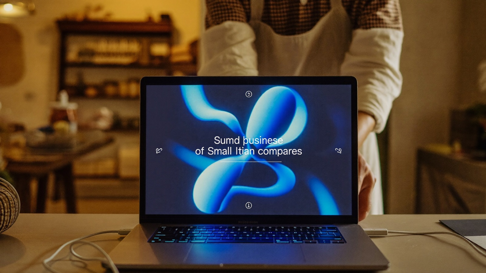

Consulenza AI per PMI: la guida pratica (2026)
Perché le piccole imprese italiane restano indietro sull'intelligenza artificiale, cosa può fare l'AI reparto per reparto, e il percorso sensato per partire senza buttare soldi.

In sintesi
Solo il 15,7% delle PMI italiane usa l'intelligenza artificiale, contro il 53,1% delle grandi imprese (ISTAT). Il problema non sono i costi — gli strumenti partono da 0€ — ma le competenze: è l'ostacolo indicato dal 60% di chi rinuncia. Questa guida mostra cosa può fare l'AI in una PMI reparto per reparto, il percorso in 4 fasi per adottarla, i costi reali e il Voucher MIMIT che copre fino al 50%.
La consulenza AI per una PMI serve a una cosa: trasformare l'intelligenza artificiale da argomento di cui si parla a strumento che lavora — su preventivi, email, documenti, contenuti e dati dell'azienda. E il momento è adesso, perché i numeri raccontano un'Italia spaccata in due.
Secondo l'ISTAT, il 53,1% delle grandi imprese italiane usa già l'AI, contro il 15,7% delle PMI: un divario di 37 punti, quasi raddoppiato in due anni. L'Osservatorio del Politecnico di Milano conferma: il 71% delle grandi aziende ha avviato almeno un progetto AI, contro l'8% delle piccole. E il motivo non è il budget: sempre secondo l'ISTAT, tra chi ha valutato l'AI e poi ha rinunciato circa il 60% indica la mancanza di competenze come ostacolo principale. Tradotto: chi colma il gap di competenze prima dei concorrenti si prende un vantaggio che i grandi hanno già incassato.
Cosa può fare l'AI in una PMI, reparto per reparto
- Amministrazione: preventivi e solleciti scritti in un decimo del tempo, fogli di calcolo puliti e riconciliati parlando con l'AI, documenti ricorrenti generati da modelli.
- Vendite e clienti: risposte rapide e curate alle richieste, proposte commerciali su misura, riassunti automatici di telefonate e riunioni con i punti d'azione.
- Marketing: contenuti per social, sito e newsletter prodotti internamente con la voce dell'azienda — dove molte PMI oggi pagano 600-800€ al mese di agenzia.
- Operazioni: procedure interne documentate, manuali e schede tecniche riscritti in linguaggio chiaro, traduzioni immediate per clienti e fornitori esteri.
Nota bene: quasi tutto questo si fa con strumenti da 0 a 25€ al mese per persona. Il costo vero non è il software: è sapere come usarlo sul proprio caso.
Il percorso sensato: 4 fasi
- Assessment (capire dove conviene) Si mappano le attività che consumano più ore e si individuano i 2-3 punti dove l'AI rende subito. Fatto bene richiede poche ore, non settimane. Qui trovi la guida completa all'AI assessment.
- Quick win (dimostrare il valore) Si parte dal punto più promettente e si porta a casa un risultato funzionante: un'automazione, un flusso di preventivi, un sistema di contenuti. Serve a convincere i numeri, non le opinioni.
- Formazione del team Le persone che fanno il lavoro imparano a usare gli strumenti sui casi loro, con prompt e flussi già configurati. È la fase che quasi tutte le imprese saltano — ed è il motivo per cui poi l'AI "non funziona".
- Automazioni strutturali Solo ora, con competenze in casa e numeri alla mano, ha senso valutare progetti più grandi: integrazioni col gestionale, agenti dedicati, sviluppo su misura.
Quanto costa (e il Voucher che paga metà)
Le fasce di mercato per le PMI vanno dai 20.000-35.000€ dei progetti completi alle giornate di consulenza da 500-1.500€ (ne parlo in dettaglio nella guida ai costi della consulenza AI). Ma le fasi 1-3 del percorso non richiedono un progetto: si fanno con sessioni operative da 250€ — un'ora e mezza a schermo condiviso, materiale funzionante alla fine — o col pacchetto da 5 sessioni a 999€, corso incluso, per formare il team.
Per i percorsi lunghi c'è il Voucher per consulenza in innovazione del MIMIT: fino al 50% della spesa coperta per contratti di 9-15 mesi con innovation manager iscritti all'elenco ministeriale. In ogni caso, la consulenza resta una spesa deducibile.
I 5 errori che vedo più spesso nelle PMI
- Comprare il software prima delle competenze L'abbonamento inutilizzato è la tassa più pagata d'Italia. Prima si impara sul caso concreto, poi si compra ciò che serve.
- Delegare tutto all'esterno Se ogni contenuto e ogni automazione passa da un fornitore, non hai adottato l'AI: hai solo aggiunto un costo mensile.
- Partire dal progetto grande L'integrazione col gestionale può aspettare; le 10 ore a settimana perse sulle email no.
- Ignorare le persone Se il team vive l'AI come una minaccia o un obbligo, sabota. Coinvolgerlo dalla fase quick win cambia tutto.
- Nessuna misura Ore risparmiate, tempi di risposta, contenuti pubblicati: senza un prima e un dopo, non saprai mai se ha funzionato.
Vuoi capire dove l'AI conviene nella tua impresa?
Prenota una call conoscitiva gratuita su WhatsApp: mi racconti come lavorate e ti dico da quale reparto partirei — e cosa produrremmo nella prima sessione.
💬 Prenota la call gratuita Rispondo io e il mio team personalmente — non un'AI.Qui trovi tutti i servizi e i prezzi, senza sorprese.
Domande frequenti
Quanto costa portare l'AI in una PMI?
Dipende dal punto di partenza: si va dalla singola sessione operativa da 250€ per i quick win, ai percorsi da qualche migliaio di euro con formazione del team, fino ai progetti strutturati da 20.000€ e oltre per integrazioni complesse. La regola sensata è partire piccoli e investire dove i numeri lo giustificano.
La mia impresa è troppo piccola per l'intelligenza artificiale?
No, è il contrario: più l'azienda è piccola, più ogni ora recuperata pesa. Gli strumenti di oggi (ChatGPT, Claude, Gemini) costano 0-25€ al mese e si usano in italiano: la barriera non è la tecnologia, sono le competenze — ed è esattamente ciò che una buona consulenza risolve.
Da dove conviene partire?
Dalle attività ripetitive che consumano più ore: email e preventivi, documenti ricorrenti, contenuti per social e sito, riassunti di riunioni, fogli di calcolo. Sono i punti dove l'AI dà risultati misurabili in giorni, non mesi.
Il Voucher MIMIT vale anche per la mia PMI?
Se rientri nei requisiti sì: copre fino al 50% della spesa per consulenze in innovazione di 9-15 mesi con innovation manager iscritti all'elenco del ministero. Per interventi brevi non si applica, ma la spesa resta deducibile.
Quanto tempo serve per vedere risultati?
Per i primi risultati concreti bastano ore, non mesi: una sessione ben mirata lascia automazioni già funzionanti. Per cambiare il modo di lavorare di un team servono invece 2-3 mesi di pratica accompagnata.